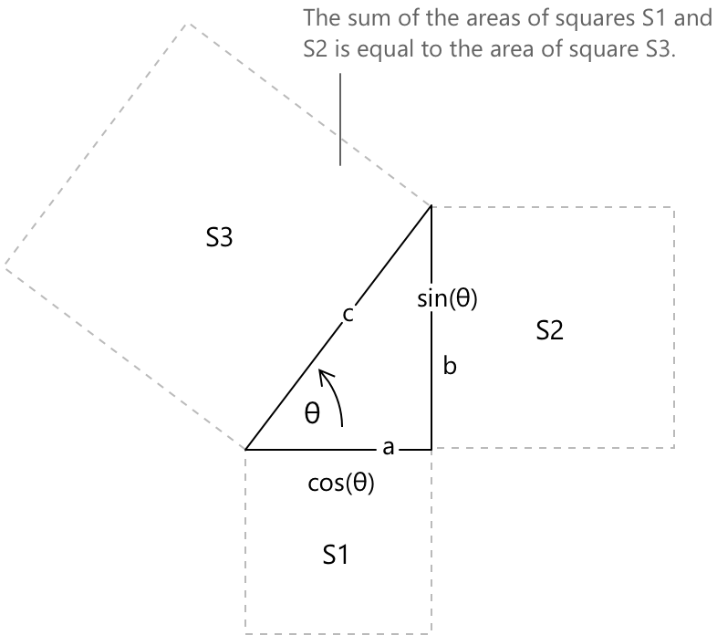

Основна тригонометрична тотожність
Означення
Піфагорова тотожність — це рівняння, що пов'язує тригонометрію та геометрію, і воно випливає безпосередньо з теореми Піфагора, яка пов'язує сторони прямокутного трикутника. Розглянемо прямокутний трикутник, гіпотенуза якого має довжину \(1\). Розмістивши трикутник на одиниковому колі та позначивши \(\theta\) як кут при початку координат, отримаємо, що два катети мають довжини, що дорівнюють \(\sin(\theta)\) та \(\cos(\theta)\) відповідно.

Тотожність має вигляд
\[ \sin^2\theta + \cos^2\theta = 1 \]
де \(\sin^2\theta\) означає \((\sin\theta)^2\), а \(\cos^2\theta\) означає \((\cos\theta)^2\). Щоб зрозуміти, чому це так, нагадаємо, що теорема Піфагора стверджує, що в будь-якому прямокутному трикутнику квадрат гіпотенузи дорівнює сумі квадратів двох катетів.

Позначаючи гіпотенузу як \(c\), а катети як \(a\) та \(b\), теорема записується так:
\[ a^2 + b^2 = c^2 \]
Розмістивши трикутник всередині одиничного кола, гіпотенуза \(c\) збігається з радіусом кола, який за означенням дорівнює одному. Підставивши \(c = 1\), \(a = \sin\theta\) та \(b = \cos\theta\) у рівняння вище, ми безпосередньо отримаємо піфагорову тотожність.
Піфагорова тотожність дозволяє виразити кожну з двох функцій через іншу. Розв'язання відносно синуса дає:
\[ \sin\theta = \pm \sqrt{1 – \cos^2\theta} \]
а розв'язання відносно косинуса дає:
\[ \cos\theta = \pm \sqrt{1 – \sin^2\theta} \]
У кожному випадку знак залежить від квадранта, в якому лежить \(\theta\). У першому квадранті обидві функції додатні, тому застосовується додатний квадратний корінь; у решті квадрантів знак слід обрати відповідно до відомого знака відповідної функції в цій області.
Ця ж тотожність також дає підґрунтя для двох подальших співвідношень: одне включає тангенс та секанс, інше — котангенс та косеканс.
Щоб отримати перше, поділимо обидві частини \(\sin^2\theta + \cos^2\theta = 1\) на \(\cos^2\theta\):
\[ \frac{\sin^2\theta}{\cos^2\theta} + \frac{\cos^2\theta}{\cos^2\theta} = \frac{1}{\cos^2\theta} \]
Зауваживши, що \(\sin\theta / \cos\theta = \tan\theta\) та \(1/\cos\theta = \sec\theta\), рівняння зводиться до:
\[ \tan^2\theta + 1 = \sec^2\theta \]
Щоб отримати друге, поділимо обидві частини замість цього на \(\sin^2\theta\):
\[ \frac{\sin^2\theta}{\sin^2\theta} + \frac{\cos^2\theta}{\sin^2\theta} = \frac{1}{\sin^2\theta} \]
Оскільки \(\cos\theta / \sin\theta = \cot\theta\) та \(1/\sin\theta = \csc\theta\), це спрощується до:
\[ 1 + \cot^2\theta = \csc^2\theta \]
Три отримані тотожності разом із початковою піфагоровою тотожністю становлять основу більшості алгебраїчних перетворень, що зустрічаються в тригонометрії.
Обмеження області визначення
Тотожності:
\[\tan^2\theta + 1 = \sec^2\theta\] \[1 + \cot^2\theta = \csc^2\theta\]
виконуються лише там, де відповідні ділення визначені. Ділення на \(\cos^2\theta\) є правильним для всіх \(\theta\), які не є непарними кратними \(\dfrac{\pi}{2}\), оскільки саме при цих значеннях \(\cos\theta = 0\), а \(\tan\theta\) та \(\sec\theta\) не визначені.
Аналогічно, ділення на \(\sin^2\theta\) вимагає \(\sin\theta \neq 0\), що виключає всі цілі кратні \(\pi\), де \(\cot\theta\) та \(\csc\theta\) не визначені. Початкова тотожність \(\sin^2\theta + \cos^2\theta = 1\), натомість, виконується для будь-якого дійсного значення \(\theta\) без винятку.
Цей збіг між обмеженнями області визначення та природними областями визначення \(\tan\), \(\sec\), \(\cot\) та \(\csc\) не є випадковим. Ці чотири функції визначені саме як відношення, що включають синус і косинус, тому значення, виключені з їхніх областей визначення, — це саме ті значення, при яких відповідний знаменник перетворюється на нуль. Отже, обмеження, що виникають при виведенні тотожностей шляхом ділення, є тими самими обмеженнями, що визначають самі функції, і не могли бути іншими.
Справедливість для довільних кутів
Геометричний аргумент, наведений вище, встановлює тотожність для гострих кутів, оскільки він ґрунтується на інтерпретації синуса та косинуса як довжин катетів прямокутного трикутника. Така інтерпретація перестає бути змістовною, коли \(\theta\) є тупим, від'ємним або більшим за \(2\pi\), тому необхідне більш загальне обґрунтування.
Стандартним підходом є аналітичне означення синуса та косинуса через одиничне коло. Для будь-якого дійского числа \(\theta\) \(\cos\theta\) та \(\sin\theta\) визначаються як координати точки, отриманої шляхом переміщення на відстань \(\theta\) вздовж одиничного кола, починаючи з точки \((1, 0)\), за домовленістю, що додатні значення відповідають руху проти годинникової стрілки.
За таким означенням точка \((\cos\theta, \sin\theta)\) за побудовою лежить на одиничному колі, а рівняння одиничного кола має вигляд \(x^2 + y^2 = 1\). Підставляючи \(x = \cos\theta\) та \(y = \sin\theta\), отримаємо:
\[ \cos^2\theta + \sin^2\theta = 1 \]
для кожного дійского значення \(\theta\), без будь-яких обмежень щодо чверті або величини кута. Таким чином, ця тотожність є не наслідком геометрії трикутника, а прямим вираженням означення тригонометричних функцій на дійсній прямій.
Приклад 1
Піфагорова тотожність часто є корисною для спрощення виразів, у яких вона на перший погляд не помітна. Наступний вираз ілюструє, як розпізнавання алгебраїчної структури в чисельнику може звести, здавалося б, нетривіальний дріб до сталі. Розглянемо вираз:
\[ \frac{\sin^4\theta - \cos^4\theta}{\sin^2\theta - \cos^2\theta} \]
Чисельник є різницею квадратів і відповідно розкладається на множники як:
\[ \sin^4\theta - \cos^4\theta = (\sin^2\theta + \cos^2\theta)(\sin^2\theta - \cos^2\theta) \]
Оскільки \(\sin^2\theta + \cos^2\theta = 1\) за Піфагоровою тотожністю, чисельник спрощується до \(\sin^2\theta - \cos^2\theta\). Отже, вираз спрощується до:
\[ \frac{\sin^2\theta – \cos^2\theta}{\sin^2\theta – \cos^2\theta} = 1 \]
за умови, що \(\sin^2\theta \neq \cos^2\theta\), тобто для всіх \(\theta\), які не є непарними кратними \(\dfrac{\pi}{4}\).
Переписування виразів через одну функцію
Поширеною вимогою у вищому численнях та математичному аналізі є переписування тригонометричного виразу так, щоб він містив лише одну функцію. Три Піфагорові тотожності забезпечують систематичний спосіб зробити це, і ця техніка неодноразово зустрічається в широкому спектрі задач: від спрощення тригонометричних виразів до обчислення інтегралів та розв'язання диференціальних рівнянь.
З фундаментальної тотожності:
\[\sin^2\theta + \cos^2\theta = 1\]
ми отримаємо два правила заміни:
\[\sin^2\theta = 1 – \cos^2\theta\] \[\cos^2\theta = 1 – \sin^2\theta\]
Це дозволяє будь-який поліноміальний вираз, що містить і синус, і косинус, звести до полінома лише від однієї з цих функцій. Наприклад, вираз вигляду:
\[\sin^2\theta + 2\sin\theta\cos\theta + \cos^2\theta\]
можна спростити, зауваживши, що: \(\sin^2\theta + \cos^2\theta = 1\), що залишає \(1 + 2\sin\theta\cos\theta\), що розпізнається як \(1 + \sin 2\theta\).
Похідні тотожності слугують тій самій меті для виразів, що містять обернені та відношеннєві функції. З \(\tan^2\theta + 1 = \sec^2\theta\) отримують \(\tan^2\theta = \sec^2\theta – 1\), що є корисним щоразу, коли вираз містить \(\tan\theta\) та \(\sec\theta\) і потрібне зведення до однієї функції.
Аналогічно, з \(1 + \cot^2\theta = \csc^2\theta\) отримують \(\cot^2\theta = \csc^2\theta – 1\), що дозволяє записувати вирази в \(\cot\theta\) та \(\csc\theta\) лише через \(\csc\theta\).
Багато стандартних інтегралів вимагають, щоб підінтегральна функція була представлена у вигляді, що відповідає відомому шаблону, перш ніж можна буде застосувати заміну. Інтеграл від \(\tan^2\theta\), наприклад, не піддається негайному зведенню за елементарними правилами. Заміна \(\tan^2\theta = \sec^2\theta – 1\) переписує підінтегральний вираз як різницю двох доданків, кожен з яких інтегрується просто:
\[ \begin{align} \int \tan^2\theta \, d\theta &= \int (\sec^2\theta - 1) \, d\theta \\[6pt] &= \int \sec^2\theta \, d\theta \, - \int d\theta \\[6pt] &= \tan\theta - \theta + c \end{align} \]
Цей самий принцип лежить в основі тригонометричної підстановки, де вирази з радикалами, такими як \(\sqrt{1 – x^2}\) або \(\sqrt{1 + x^2}\), обробляються шляхом введення тригонометричної змінної з подальшим застосуванням відповідної Піфагорової тотожності для повного усунення радикалу. У випадку \(\sqrt{1 – x^2}\) підстановка \(x = \sin\theta\) перетворює радикал наступним чином:
\[ \sqrt{1 - x^2} = \sqrt{1 – \sin^2\theta} = \sqrt{\cos^2\theta} = |\cos\theta| \]
що зводиться до \(\cos\theta\), коли \(\theta \in \left[-\dfrac{\pi}{2}, \dfrac{\pi}{2}\right]\), що є стандартним проміжком, обраним для цієї підстановки. Радикал було повністю усунуто, і отриманий інтеграл містить лише тригонометричні функції, до яких безпосередньо застосовуються стандартні методи.
Приклад 2
Заміна \(x = \sin\theta\) є стандартним методом для інтегралів, що містять радикал \(\sqrt{1 – x^2}\). Саме піфагорова тотожність робить цю заміну ефективною: вона гарантує, що радикал зводиться до однієї тригонометричної функції, повністю усуваючи квадратний корінь. Розглянемо наступний інтеграл:
\[ \int \sqrt{1 – x^2} \, dx \]
Нехай \(x = \sin\theta\), де \(\theta \in \left[-\dfrac{\pi}{2}, \dfrac{\pi}{2}\right]\), тоді \(dx = \cos\theta \, d\theta\). Радикал перетворюється наступним чином:
\[ \sqrt{1 – x^2} = \sqrt{1 - \sin^2\theta} = \sqrt{\cos^2\theta} = \cos\theta \]
де на останньому кроці використано той факт, що \(\cos\theta \geq 0\) на обраному проміжку. Підставляючи в інтеграл, отримаємо:
\[ \int \sqrt{1 - x^2} \, dx = \int \cos\theta \cdot \cos\theta \, d\theta = \int \cos^2\theta \, d\theta \]
Підінтегральна функція \(\cos^2\theta\) обробляється за допомогою тотожності \(\cos^2\theta = \dfrac{1 + \cos 2\theta}{2}\), що дає:
\[ \begin{align} \int \cos^2\theta \, d\theta &= \int \frac{1 + \cos 2\theta}{2} \, d\theta \\[6pt] &= \frac{\theta}{2} + \frac{\sin 2\theta}{4} + c \end{align} \]
Залишається повернутися до початкової змінної. Оскільки \(x = \sin\theta\), маємо \(\theta = \arcsin x\). Для члена \(\sin 2\theta\) формула подвійного кута дає \(\sin 2\theta = 2\sin\theta\cos\theta = 2x\sqrt{1-x^2}\).
Отже, розв'язання таке:
\[ \int \sqrt{1 - x^2} \, dx = \frac{\arcsin x}{2} + \frac{x\sqrt{1 – x^2}}{2} + c \]
Це формула площі півкола одиничного радіуса, як і очікувалося з геометричної інтерпретації підінтегральної функції.
Зв'язок із формулою Ейлера
Піфагорова тотожність має особливо просте доведення, як тільки тригонометричні функції розширюються на комплексну площину. Формула Ейлера стверджує, що для будь-якого дійсного \(\theta\) комплексна експонента задовольняє рівності:
\[e^{i\theta} = \cos\theta + i\sin\theta\]
Оскільки \(e^{i\theta}\) лежить на одиничному колі в комплексній площині, його модуль дорівнює одиниці. Обчислення квадрата модуля безпосередньо дає:
\[ |e^{i\theta}|^2 = \cos^2\theta + \sin^2\theta = 1 \]
що відновлює піфагорову тотожність як прямий наслідок означення експоненціальної функції на уявній осі.